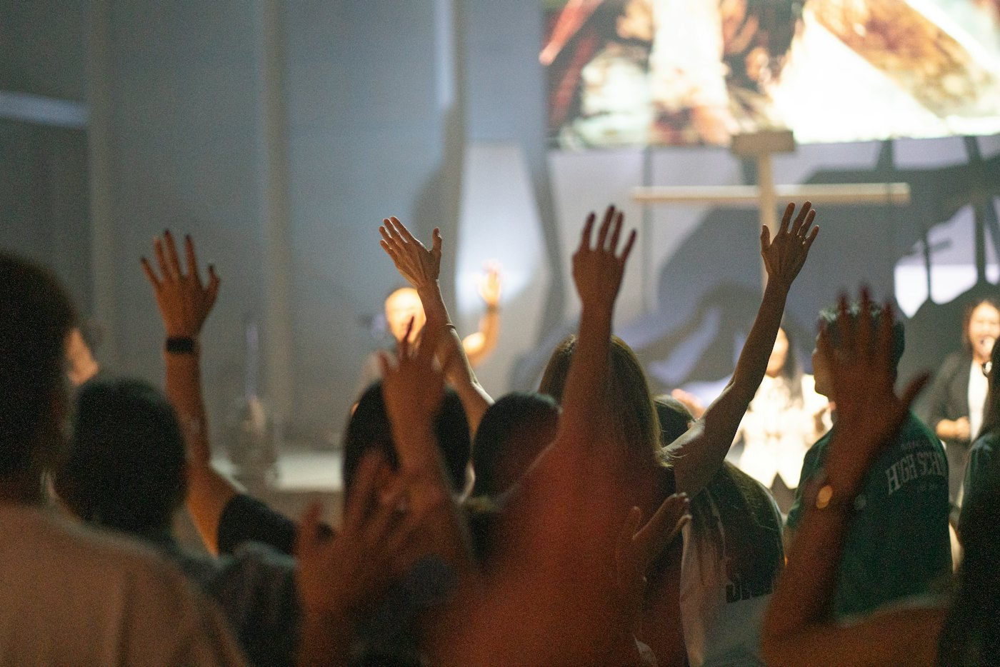
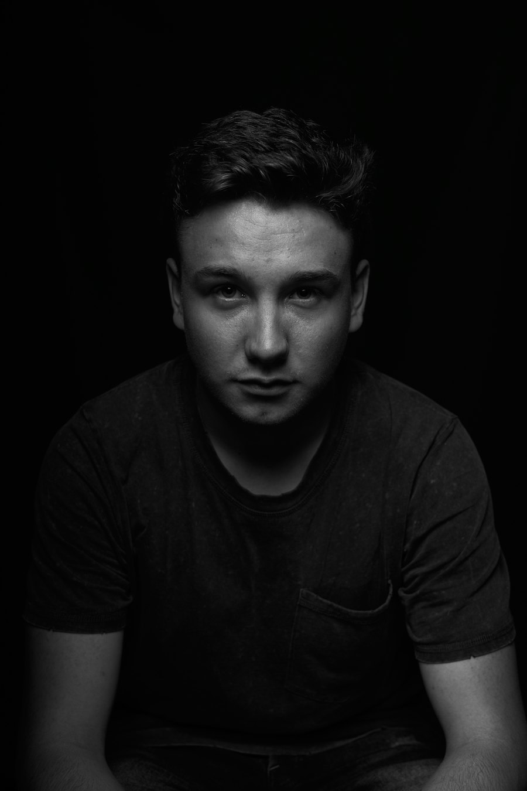
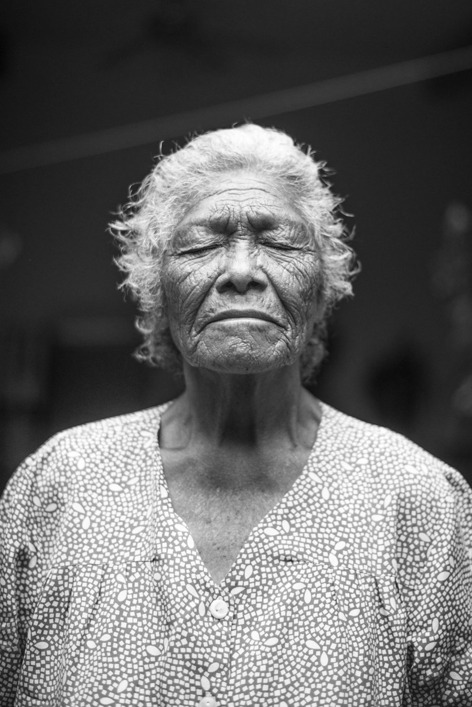
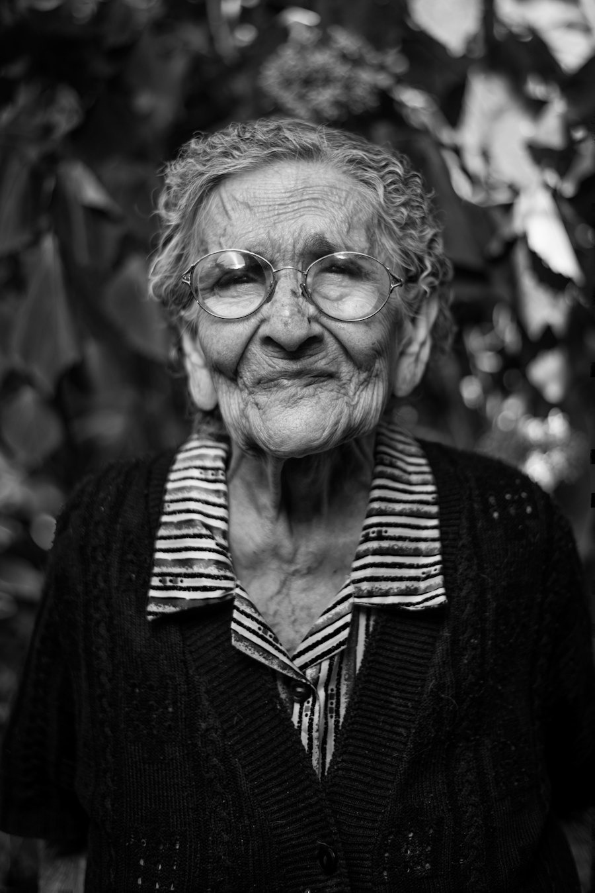
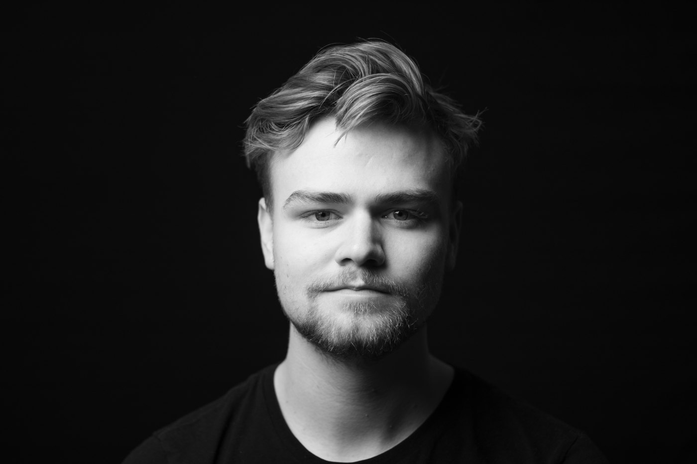
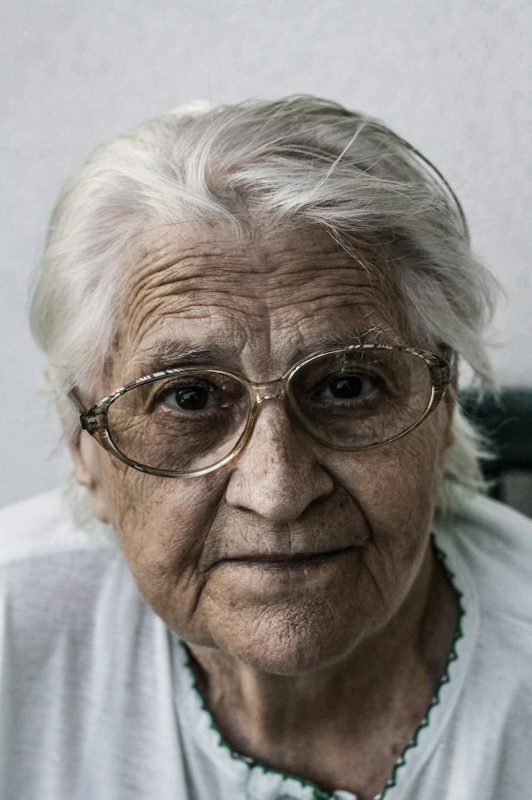
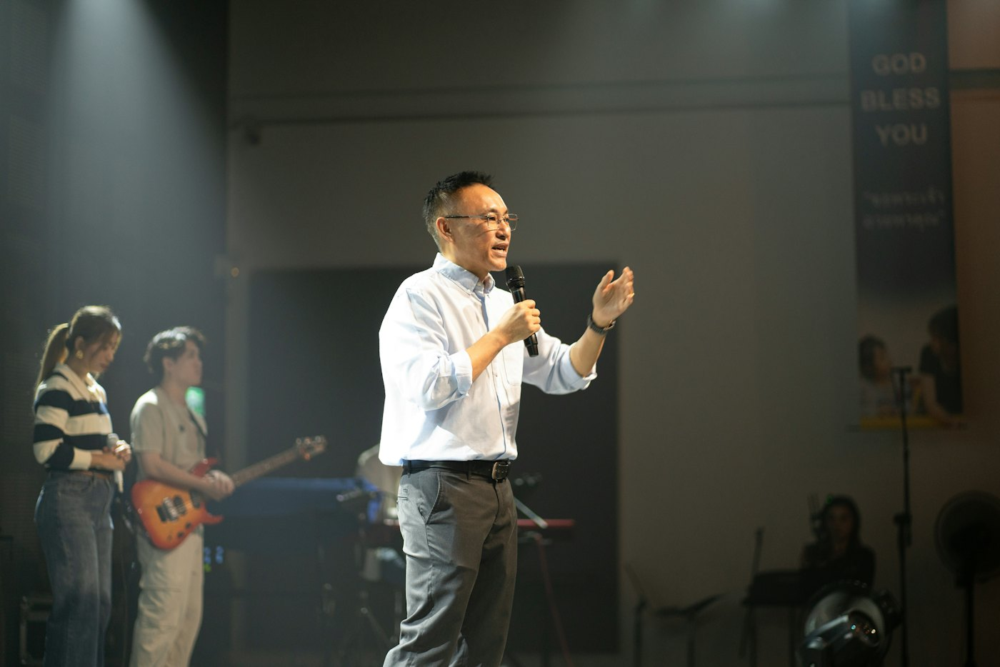
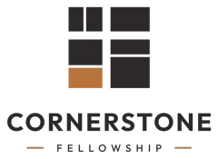
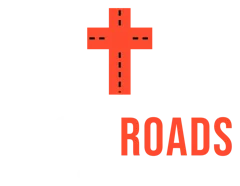

Bridges helps churches show up online with content that feels fresh, honest, and unmistakably theirs. We handle social strategy, reels and carousels, Sunday screen media, and the volunteer teams who capture it all.
Concept projects. Each one shows the full process, from strategy to the finished posts, screens, and systems.
A four-week Instagram, Facebook and YouTube rollout for a series on Sabbath rest, built for people in their 20s and 30s.
Lanternfield Church
Pre-roll, a live countdown, video wall loops, lower thirds and announcement slides, all from one system.
Cedarline Church
A channel audit, content pillars, posting rhythm, and a 90-day roadmap with the numbers we'd track.
Northvale Fellowship

Recruiting posts, team scheduling, shot lists, a Dropbox library and a hand-off workflow so no good photo gets lost.
Mesa Grove Church

01A
02A
06A
08A
09APortrait sessions and short testimonies, edited into posts, a lobby display wall and a reusable Lightroom look.
Hollow Creek Church

A weekly system that turns one sermon into six clips, with thumbnails people actually click.
Pinecrest Church
A retro summer camp look across sign-up posts, a promo reel, a parent info card and camp shirts.
Ridgeview Students
A clean, gridded daily devotional series for December, with stories, a reading plan and Christmas Eve invites.
Brookhollow Church
The results each package is built to deliver, told from the church’s side.

“Bridges took our sermon series from a single slide to a four-week rollout on Instagram, Facebook, and YouTube. They planned every post, and our engagement doubled before week two.”

“We had no posting plan and four half-abandoned accounts. Bridges started with a channel audit, then gave us content pillars, a weekly rhythm, and a 90-day roadmap we could actually follow.”
“Our Sunday screens used to be an afterthought. Now Bridges sends a full media pack every series, with pre-roll, countdowns, lower thirds, and video wall loops that set the tone before the first song.”
“Our photo volunteers were great people with no system. Bridges set them up in Planning Center with shot lists, call times, and a Dropbox library, and now no good moment gets lost.”
“I inherited social media with zero training. The biweekly coaching calls with Bridges gave me honest feedback and a clear two-week plan every time, and I finally feel confident running our channels.”
We work alongside your staff and ministries, so everything stays on brand and on mission.
A plan that keeps you ahead of trends, algorithms and platform changes, without chasing every fad.
Reels, carousels and posts that tell the story of what God is doing in your church.
Real replies to comments and DMs, so people online are met by a person, not silence.
We work with ministry leaders to find the stories worth telling, then plan how to capture them.
Weekly pre-roll, countdowns and video wall content that sets the tone before the first song.
We recruit, schedule and train photo and video volunteers in Planning Center, and keep every file findable.
Bi-weekly Zoom sessions
Every two weeks, your communications coordinator meets with us for a focused 45-minute Zoom call. We look at what worked, plan the next two weeks, and give honest feedback, so your coordinator keeps growing without needing a full agency.
A short, honest look at your church’s social channels, with three things you could change this month to reach more people. It’s free, it takes a few days, and there’s no sales pitch attached.
Simple monthly pricing, no setup fees, no contracts. Cancel anytime. Your first week starts with a needs assessment so everything fits your church from day one.
$150/month
What’s included:
$300/month
Everything in Sunday to Sunday, plus:
$500/month
Everything in Sunday + Social, plus:
Not sure which fits? Book a free 20-minute call and we’ll recommend one. No pressure, no commitment.
Pre-roll, countdown, two or three slide layouts and a social set for one series. Two rounds of edits. Included in Sunday + Social and Ministry Partner.
Photo and video coverage for an event in the Waco area. Three-hour minimum; choose your hours at checkout.
No setup fees. Week 1 is a needs assessment. No contracts or minimums: every package is month to month, and you can cancel anytime. Websites and logos have their own packages on those tabs.
Don’t see yours? Book a free call and ask us anything.
We do. Once your needs assessment is done, our team writes, designs and schedules your posts. Your staff stays in the loop and approves the plan, but you don’t have to log in and post anything yourself.
No. You add Bridges as a team member through Meta Business Suite and YouTube’s permissions, so your logins stay with you. You can remove our access at any time.
No. Every monthly package is month to month. If it isn’t working for you, cancel anytime and we’ll hand everything back.
Yes. Sunday to Sunday is built for churches without a media staff, so we handle the posting for you.
Week one is a needs assessment. We learn your church’s voice, what you believe and what’s coming up, and we build a short guide that every post follows. Nothing goes out that doesn’t sound like you.
You do. Everything we make for your church is yours to keep and reuse, even if you stop working with us.
It’s a free 20-minute Zoom call. We’ll ask about your church and what’s coming up, look at your current channels together, and tell you honestly which package fits, or whether you need one at all.